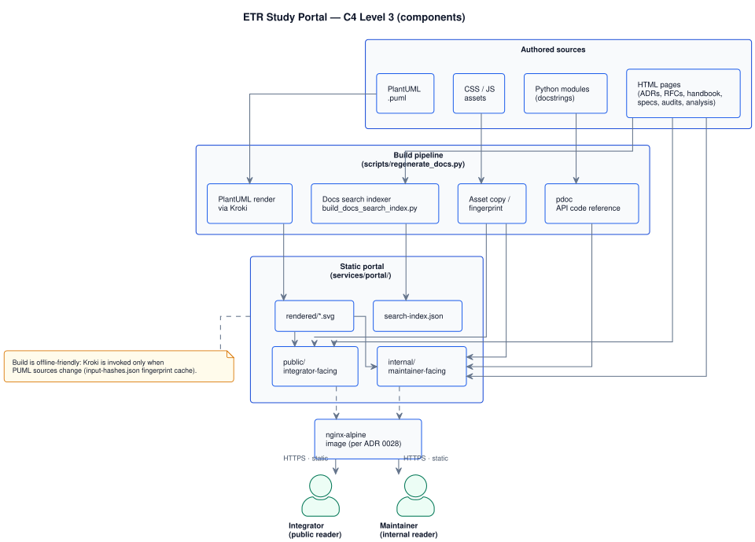

portal · Architecture
Component-level architecture of the portal service: a static documentation site built ahead of time and served from an nginx-alpine image (ADR 0028). There is no runtime application logic — the build pipeline is the system.
For platform-level views (System Context · Containers) and how the portal sits next to api / monitoring, see system design.
C4 Level 3 — components
Authored sources flow through the build pipeline (PlantUML render, pdoc, search index, asset copy) into
two static trees, public/ and internal/, served by a thin nginx image. The build
is offline-friendly: Kroki is invoked only when PlantUML sources change, gated by the
input-hashes.json fingerprint cache.
Components inside the portal
Authored sources · build pipeline · static portal · runtime image.

services/portal/internal/uml/architecture/portal_component_view.puml
Repository layout
The portal service occupies two top-level paths: authored sources under
services/portal/{public,internal}/ and shared frontend assets under
services/frontend/portal/assets/ (CSS, JS, fonts, icons).
| Path | Audience | Contents |
|---|---|---|
services/portal/public/ | Integrator | Marketing landing, getting-started, OpenAPI sandbox under reference/api/. Diátaxis quadrants per RFC 0004. |
services/portal/internal/ | Maintainer | ADRs, RFCs, runbooks, audits, handbook, this catalog, system design, frontend specs. Backstage IDP shape per RFC 0004. |
services/frontend/portal/assets/ | Both | Shared CSS / JS / fonts / icons. Sidebar config files, theme tokens, JS modules. Maintained per frontend docs hub. |
services/portal/internal/uml/ | Build input | PlantUML sources (architecture/, sequences/, make/) + rendered SVGs + input-hashes.json. |
Build pipeline
The pipeline is driven by scripts/regenerate_docs.py and exposed through Make targets
(make docs-fix, make docs-check). Steps run in order; each step is content-addressed
so unchanged inputs skip work.
- PlantUML render — every
*.pumlunderinternal/uml/is sent to Kroki and the resulting SVG lands ininternal/uml/rendered/. The fingerprint cache (input-hashes.json) skips unchanged sources. Authority: ADR 0020. - pdoc — generates HTML reference for every Python module under
app/into catalog/api/code-reference/. Authority: ADR 0016. - Docs search index —
scripts/build_docs_search_index.pywalks every HTML page, extracts headings + first paragraphs, and writessearch-index.json. Client-side ranking per ADR 0027. - Asset fingerprint / copy — CSS / JS asset paths reference shared modules under
services/frontend/portal/assets/; the build leaves these in place (no copy step) and pages reference them via relative paths. - Docs check —
scripts/regenerate_docs.py --checkverifies committed SVGs match sources (no writes). Pre-commit gate.
Runtime — nginx-alpine static container
Per ADR 0028
phase 1, the portal is served by a thin static-asset image (e.g. nginx:alpine) that mounts the
built services/portal/{public,internal}/ tree. There is no application logic at runtime —
request handling reduces to file lookup, MIME typing, gzip, and HTTP caching headers.
- No authentication layer — the audience boundary is an IA boundary, not an auth boundary (RFC 0004 §3.1). Internal pages contain nothing secret; secrets never enter the portal.
- No backend connection — the OpenAPI document is built into the static tree at build time, not fetched at runtime.
- No mutable state — every page is regenerable from the repo at HEAD.
See also
- portal · API reference — what the portal exposes to readers (URL surface)
- portal · Runbooks — TOC, search, and diagram failure modes
- portal · Dependencies — build-time and runtime
- Frontend docs hub — UI architecture, components, contracts
- ADR 0028 — monorepo with service boundaries
- RFC 0004 — public vs internal IA
Page history
| Date | Change | Author |
|---|---|---|
Filled C4 L3, repository layout, build pipeline, runtime. New PlantUML source portal_component_view.puml. |
Ivan Boyarkin | |
| Initial skeleton stub. | Ivan Boyarkin |